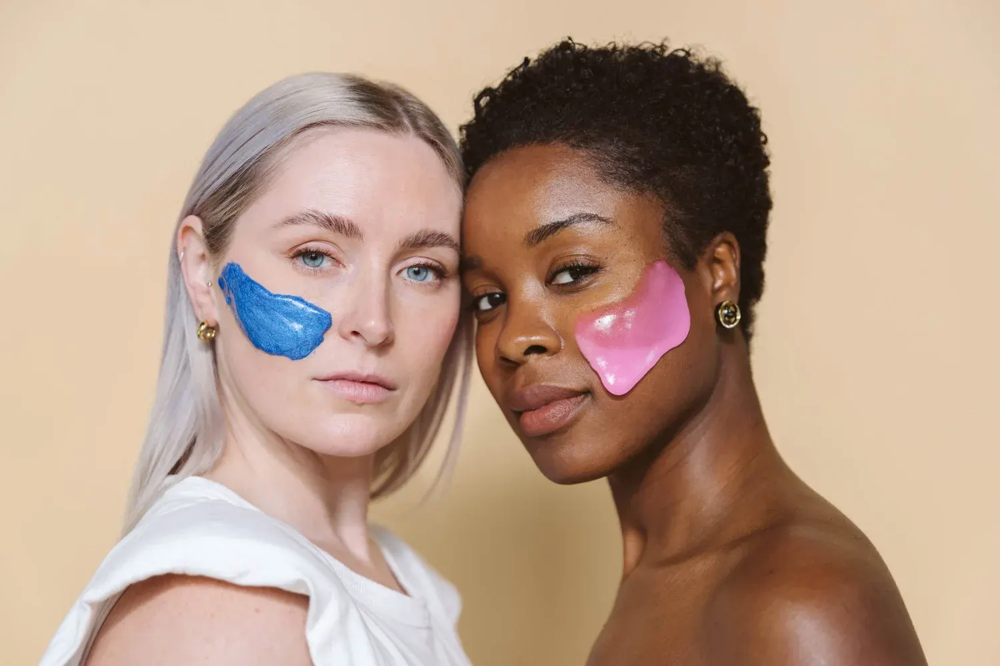

Fine Lines And Wrinkles Treatment In Calgary
Skin Concern Legend

The Story Of Our Skin
Our skin is more than just a protective layer; it's a living canvas that tells the story of our lives. It records our laughter, the squinting in the sun, and the moments of deep thought, all of which contribute to the beautiful, ever-changing landscape of our faces. But as time goes on, the subtle changes we see - the appearance of fine lines and the gradual loss of firmness - can be a source of frustration. It’s a natural part of the aging process, influenced not only by genetics but also by our lifestyle and environment. Sun exposure, pollution, stress, and even our diet can all play a role in how our skin ages, leading to a breakdown of essential proteins and a change in its overall texture.
At Face Skin & Body Bar, we believe that embracing your journey doesn't mean you can't feel confident and refreshed. We understand that fine lines and wrinkles can be a concern, and our philosophy is not about "turning back the clock," but about helping your skin look and feel its healthiest at every stage. We've seen how a personalized approach to skin care can make a significant difference in the appearance of these signs of aging. Our mission is to provide you with the knowledge and the most advanced treatments to address your unique concerns, focusing on long-term skin health rather than temporary fixes. We’re here to guide you through a comprehensive experience, offering a range of treatments designed to enhance skin texture, stimulate collagen production, and reduce the appearance of fine lines and wrinkles, helping you feel as vibrant as you are
Understanding Fine Lines & Wrinkles
What Causes Wrinkles?
To effectively treat wrinkles, it's essential to understand their origins. The process begins deep within the skin’s structure with two of the most critical proteins: Collagen and Elastin. Think of collagen as the scaffolding that gives your skin its firmness, while elastin provides its flexibility and ability to bounce back. As we get older, our bodies naturally produce less collagen and elastin. This gradual depletion means the skin becomes less resilient and more susceptible to the formation of lines and wrinkles.
Environmental factors, especially repeated exposure to the sun's UV rays, significantly accelerate this breakdown. UV damage is a primary culprit, breaking down the skin's support structure and leading to premature aging. These factors make the skin's surface uneven, contributing to the overall appearance of these lines. Beyond biological changes, our daily habits play a huge role. Repeated facial muscle movements, such as squinting in bright light, smiling, or frowning, create creases on the skin. Initially, these are temporary lines, but over time, as our skin loses its elasticity, these creases become permanent, forming deeper wrinkles. These lines and wrinkles are particularly noticeable on the forehead and around the eyes. Lifestyle choices, from diet to hydration, can also influence skin health and the formation of these lines.
Understanding these causes is the first step toward finding effective treatments that can restore the skin’s vitality and reduce the appearance of wrinkles.
The Difference Between Fine Lines & Deeper Wrinkles
While the terms "fine lines" and "wrinkles" are often used interchangeably, they represent different stages of aging and require different treatments. Fine lines are shallow, surface-level creases that are often the first visible signs of aging on the skin. They are typically caused by repetitive facial expressions and can be more noticeable in areas with thinner skin, such as around the eyes and on the forehead. These lines are generally dynamic, meaning they are visible when you make an expression but disappear when your face is at rest.
Over time, these dynamic lines can become deeper, more pronounced creases known as static wrinkles. These wrinkles are a sign of more significant collagen loss and are visible even when your facial muscles are relaxed. Deeper wrinkles are more challenging to treat with simple topical solutions and often require more advanced treatment options. Our approach focuses on identifying the root cause of these lines to recommend the most effective treatments. For fine lines, we may focus on strategies that boost collagen and improve skin hydration and texture. For deeper wrinkles, we may need to employ treatment options that target the underlying muscles or add volume to restore the skin's structure. Understanding the distinction between these two types of wrinkles is key to developing a personalized plan that provides noticeable and long-lasting results.
Comprehensive Treatment Options
At Face Skin & Body Bar, we understand that there is no one-size-fits-all solution for aging skin. The appearance of lines and wrinkles is a highly individual concern, which is why we offer a comprehensive suite of treatments and services. Our approach is designed to be flexible and personalized, recognizing that a combination of different treatments often yields the best results.
We believe that the most effective way to treat fine lines and wrinkles is through a personalized treatment plan that can include a range of products and services. During a one-on-one consultation, we assess your skin type, concerns, and goals to create a customized plan. This might mean combining a professional in-clinic procedure with a specialized home skincare regimen. Our goal is to address the specific causes of your skin’s condition, whether it's collagen loss, repetitive facial muscle movements, or a compromised skin barrier.

The Best Treatments for Fine Lines & Wrinkles
Injectables
For deeper wrinkles and lines, Injectables offer a powerful solution.
Neurotoxin Treatments: Neurotoxin is a popular choice for targeting dynamic wrinkles caused by muscle contractions, such as those on the forehead and around the eyes. By temporarily relaxing the underlying muscles, it can dramatically soften the appearance of these lines and wrinkles.
Dermal Fillers: These are used to restore lost volume and fill in deeper, static wrinkles. Dermal Fillers can be strategically applied to plump up areas that have thinned with aging, helping to restore a more youthful appearance.
Minimally & Non-Invasive Solutions
Microneedling & Radiofrequency Microneedling: These innovative treatments create micro-injuries to the skin, triggering the body’s natural healing process and a significant boost in collagen response. The new collagen helps to improve the overall texture of the skin and reduce the appearance of fine lines.
Radiofrequency Skin Tightening Treatments: These treatments use heat to tighten existing collagen and stimulate new production, which improves skin laxity and reduces the appearance of lines and wrinkles.
Advanced Skincare & Topical Solutions:
Clinical Facial Treatment: Our professional facials are customized to address your specific skin needs, providing deep nourishment and immediate improvements in texture.
- AlumierMD Peel: Our professional chemical peels are an excellent option for improving skin tone and texture, while also reducing the appearance of wrinkles. These treatments work by exfoliating the top layer of skin to reveal a smoother, more radiant complexion.
- Medical-Grade Skincare: We carry a selection of medical-grade skincare products designed to be applied topically. These products contain powerful ingredients like peptides and retinoids that are scientifically proven to boost collagen and improve the overall health of your skin. When used in conjunction with in-clinic treatments, they help maintain and enhance your results.
By choosing from a variety of treatment options, we can create a plan that effectively addresses wrinkles, improves texture, and helps you achieve your skin goals.
Benefits of Treatments for Fine Lines And Wrinkles
The Role Of Collagen
When we talk about healthy, youthful-looking skin, we can’t overstate the importance of collagen. Often called the building block of the skin, collagen is a vital protein that provides the structure and elasticity that keep our skin firm and smooth. As we get older, our body’s natural collagen production slows down, which is a key reason for the formation of lines and wrinkles. This decline in collagen leads to a loss of volume and a change in the skin’s overall texture.
Thankfully, there are many effective ways to boost collagen and restore a more vibrant appearance to your skin. Our treatments and medical-grade products are specifically designed with this goal in mind. For instance, Microneedling and Radiofrequency Microneedling are incredibly effective at stimulating your body's natural healing response to boost collagen production. The microscopic channels created by these treatments send a signal to your body to produce new, healthy collagen and elastin.
Similarly, we offer professional-grade skincare products that are packed with key ingredients like peptides and retinoids, which are scientifically proven to boost collagen when applied topically. These powerful compounds work at a cellular level to encourage new collagen formation and strengthen the existing skin structure. By combining in-clinic treatments that provide a powerful boost of collagen with a consistent at-home regimen, you can significantly improve the texture and firmness of your skin, helping to diminish the appearance of wrinkles and fine lines.
Your Personalized Treatment Plan
At Face Skin & Body Bar, we know that every individual's skin is unique. The factors that contribute to aging, such as genetics, lifestyle, and environment, vary from person to person. That's why we don't believe in a one-size-fits-all approach to wrinkle treatments. Our commitment is to provide a truly personalized experience, starting with a professional and in-depth consultation.
During this consultation, we take the time to understand your specific concerns, assess the condition of your skin, and discuss your goals. We'll identify the root causes of your fine lines and wrinkles, whether they are due to collagen loss, repetitive facial muscle movements, or other factors. This comprehensive analysis allows us to craft a customized treatment plan that is uniquely suited to you. Your plan might include a combination of different treatment options, such as Injectables for dynamic lines, chemical peels to improve skin texture, and medical-grade skincare products that can be applied topically to boost collagen production.
We believe that the best results come from a strategic combination of in-clinic treatments and a dedicated at-home regimen. By working together, we can create a powerful synergy that targets the appearance of wrinkles and other signs of aging from multiple angles. We'll guide you through every step of your journey, ensuring you have the knowledge and tools to maintain your results long after you leave our clinic. Our personalized treatment plan is not just about a single appointment; it's about a long-term partnership in your skin's health and vitality.
A New Chapter for Your Skin
The journey to healthier, more radiant skin is a partnership between you and our dedicated team at Face Skin & Body Bar. The appearance of fine lines and wrinkles is a natural part of aging, but it doesn't have to define your skin's story. Through our comprehensive range of services and personalized treatment options, we can help you address your concerns with confidence and clarity. We've shown how we can target the underlying causes of wrinkles - from a loss of collagen to repetitive facial muscle movements - and how we can boost collagen to improve skin health from the inside out.
Fine Lines & Wrinkles Transformations

Why Choose Face Skin & Body Bar?
Whether you're interested in the transformative effects of Injectables, the rejuvenating power of chemical peels, or the consistent results of a medical-grade skincare regimen, our expert staff is here to guide you. We are passionate about helping you achieve a smooth texture and a refreshed appearance. By understanding the science behind your skin and leveraging advanced wrinkle treatments, we can help you rediscover your radiance.
Patient Testimonials
“Very knowledgeable staff, kind, caring, paying attention to details and professional. I had a Morpheus treatment. I am already extremely happy with my results. This place is well worth the drive for their awesome beauty treatments.”
“I’ve been so impressed with my microneedling experience with Alexa. After two sessions, I can honestly say she's incredibly professional, but also has this amazing knack for making you feel completely relaxed and confident. The collagen mask and ice globes at the end of the treatment are such a luxurious touch and feel incredible on the skin. I’ve also been really happy with how quickly I’ve healed, with very little downtime. I’m already seeing noticeable improvements in my skin, and I’m genuinely looking forward to my next session with her. I highly recommend it.”
Had a wonderful experience today! Explained everything, helped out answering questions and comfy place! Would recommend!

Book A Consultation Today
Ready to begin your personalized journey? We invite you to schedule a consultation with our experienced professionals. Together, we’ll create a customized treatment plan that addresses your unique needs and helps you feel your very best. Book an appointment today!